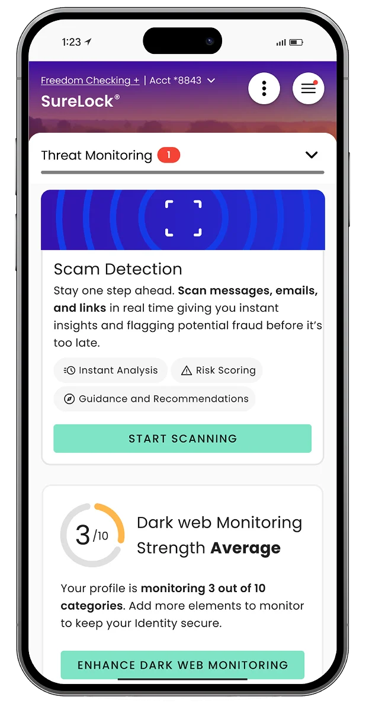
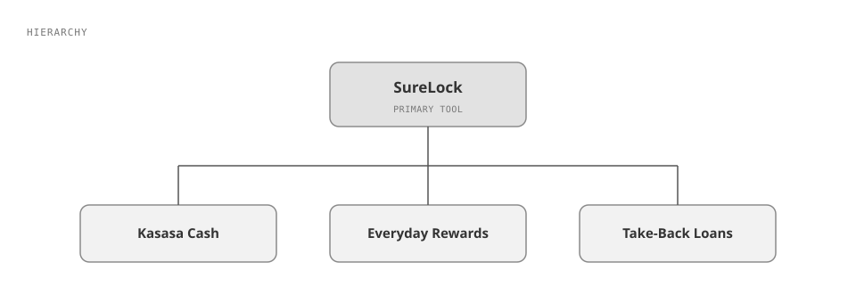
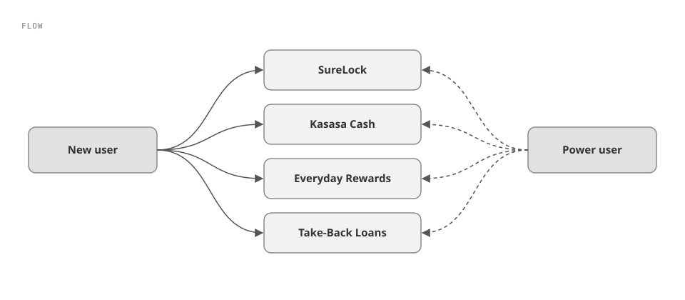
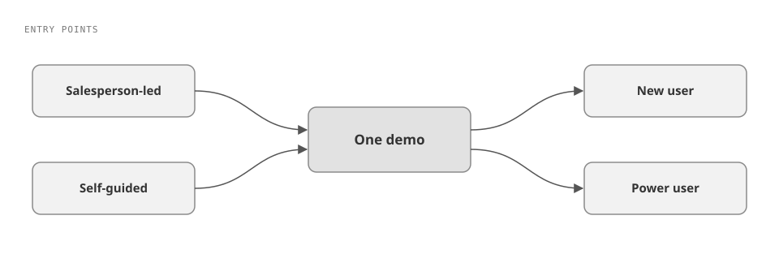
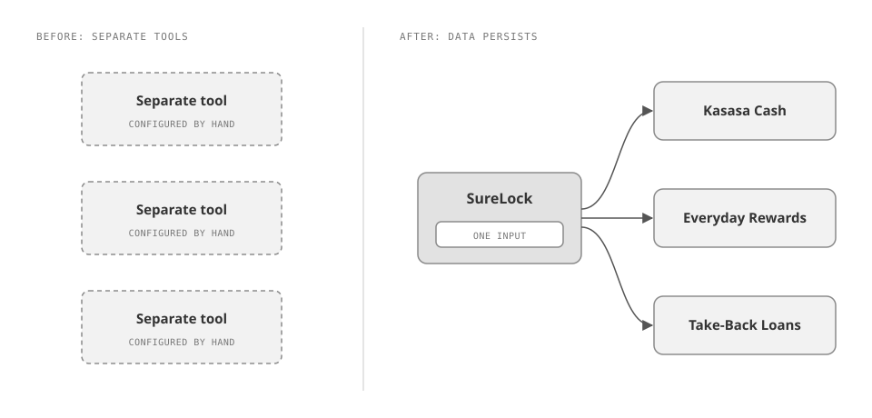
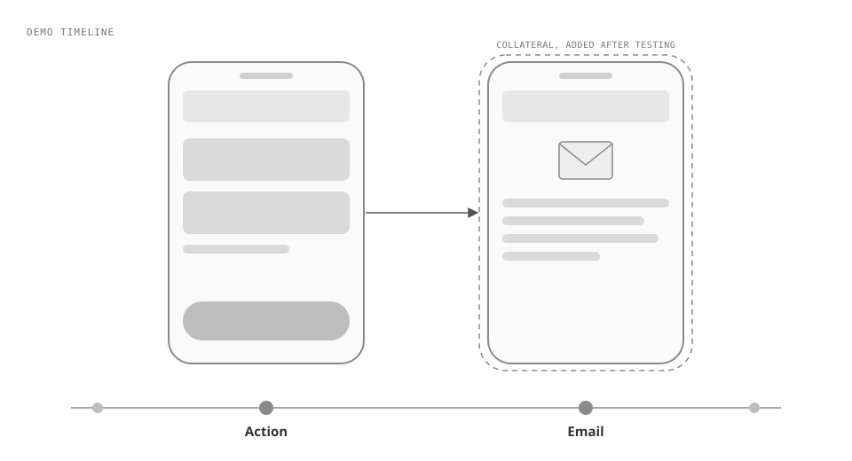

Kasasa's sales demos ran on separate tools that didn't talk to each other, so salespeople configured each one by hand and stuck to a tight script. The organization was under pressure to increase sales, the demo was a major blocker, and Kasasa's product team brought the problem to us. In 8 weeks as Senior Designer & Project Lead, I helped turn it into one demo that works whether a salesperson leads it or someone explores it on their own, guides viewers through every product as a new user or a power user, carries data across the whole platform so a change in one product ripples through the rest, and shows the emails and other collateral that about 8 salespeople told us in testing were missing. It got product and sales on the same page: the demo now ties what Kasasa's products promise to how they behave over time and affect each other, and the sales team met the rollout with incredibly positive feedback.

Kasasa's sales demos were hard to deliver with consistent messaging, and the tools were the reason. The existing demo tools didn't live in the same environment, and they didn't talk to one another. To run a realistic demo, a salesperson had to configure every tool separately and then follow a very tight script, because going off it would break the demo.
Real workflows added another drag. Showing how the software behaved meant sitting through the real-time wait for documents and sign-offs to move through each workflow.
The demo had to cover Kasasa's product suite: SureLock, the primary tool, alongside Kasasa Cash, Everyday Rewards, and Take-Back Loans.
The request came from Kasasa's product team. The organization was under a lot of pressure to increase sales, and the difficulty of the demo was a major blocker to that. The project ran 8 weeks.
It started with a big kickoff: a download of Kasasa's design system, its product suite, and the demo tools the sales team was already using.
From there, it was an information architecture problem first. The question was how every product could be reached interchangeably by different types of users. We worked it out in hierarchy and flow diagrams before designing screens. Next, we got together as a team to decide what the navigation would feel like (see Decision 02).
We ran internal usability testing with about 8 salespeople, the people who would eventually use the tool to drive conversations and demos. Testing showed we needed to show the collateral users receive at different points in the process, such as the emails sent when certain actions happen. We added those moments to the demo (see Decision 04).
Figma held the design system, and we used Figma Make for early prototype concepts. Once the initial concept was validated with a team of Kasasa's stakeholders, we moved all design and development into Claude Code.


One tool for both sales-led and self-guided demos
I designed a single demo with more than one way in: a salesperson can lead it, or someone can discover it and guide themselves.
Considered instead: separate tools for each use case.
This was a client constraint. Kasasa's demos also get found and used independently, not only in sales-led conversations, and both use cases had to be served by one tool.

Navigation that holds the viewer's hand and switches perspective
I designed navigation that always tells the viewer what they're looking at, and that lets them switch between a brand-new user's view and the view of a power user who's been on the platform for a few years.
Considered instead: one fixed perspective with no guidance.
People in a demo need context at every moment, and the tool offers different benefits to different user types. This was the hardest part of the project: untangling every way a user could reach each product, seen through the lens of each user type.
Data that persists across the whole platform
I made inputs carry through the entire demo, so a change in one place ripples through every product it touches.
Considered instead: the setup the sales team already had, separate tools configured one at a time that didn't talk to each other.
With persisting data, a viewer can see how different inputs affect products across the whole platform. The demo reads and reacts in real time the way Kasasa's actual software would, so a salesperson no longer has to hold to a tight script or wait on real documents and sign-offs to show a workflow.

Adding collateral moments after testing, at the cost of complexity
After testing with about 8 salespeople, I added the collateral users receive along the way, such as emails triggered by certain actions, into the demo experience.
Considered instead: the original, simpler plan without those moments.
Testing showed the demo needed to show what users actually receive at different points in the process. Adding those moments made the demo more complicated than we originally planned, and we took that on.

"It got product and sales on the same page."
The demo rolled out to Kasasa's sales team, replacing separately configured tools with one cohesive demo, and the team met it with incredibly positive feedback. It got product and sales on the same page: the sales team can now demonstrate the most important feature sets to clients with a variety of needs, and the demo ties what the products promise to how they behave over time and affect each other.
There's no metric. A follow-up to collect measurables was planned for 3 months after launch, and I left the agency before it happened.